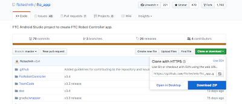
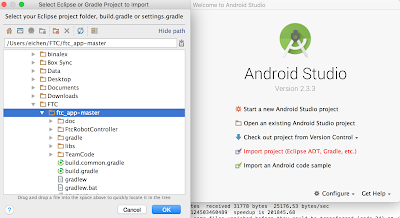
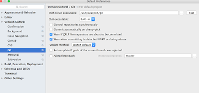
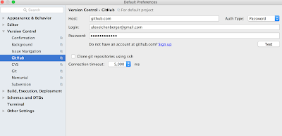
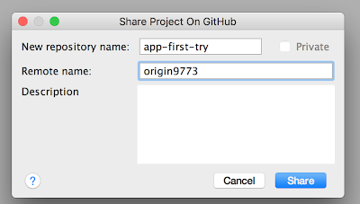
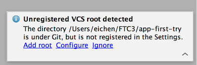

Setup Git and Android Studio with ftc_app
Choices
If you are setting up your git repository for your team and want to
start with downloading the code from FIRST, follow parts A and B below.
If a teammate has setup the team repository for you already, then follow
part C below.
Part A: Download the ftc_app from FIRST and open into Android Studio
- Head to https://github.com/ftctechnh/ftc_app page, and hit the green
"clone or download" button, and select "Download ZIP"

- Open the downloaded folder (labeled "fct_app-master") and move the
folder where you want it to be on your computer. We will move ours
under the home directory in a sub-folder named "FTC".
- Open Android Studio. If you have never opened it before, the first
page will invite you to "Import Project." If you have used Android
studio before, click on the "File->New->Import Project". Then
locate your FTC/fct_app-master folder in the folder navigator and hit
"OK."

Part B: Set Android Studio to use git and your own GitHub account
- In Android Studio, click on the "File->Other Settings->Default
Settings." Select the "Git" tab in the left hand panel. Fill in the
"Path to Git Executable" with the proper information and verify it
works by clicking the "Test" button next to it.

- In this same setting page, hit the "GitHub" tab in the left hand
panel and fill in your GitHub user id and password. Sign up if you
don't already have one. You should verify your setting by clicking the
Test button. You may want to use your team GitHub account, if you have
one.

- Apply your new settings by clicking the "Apply" button at the bottom
right. It will ask you to set a password; simplest is to leave it
blank and hit "ok".
- In Android Studio, click the "VCS->Import Into Version
Control->Share Project on GitHub." Fill in your new repository
name, and please add your team number to the "Remote Name" field
(otherwise there will be confusion between the FIRST repository an the
one of your team). Click the "Share" button.

- Make sure that all the files are selected, add a commit message when
prompted, and hit OK.
- You can now go to your GitHub account and verify that the new
repository was created.
Part C: Share your own Github version of the ftc_app with your
teammates
- Go to your team's GitHub web page, typically
"https://github.com/your-account-name/your-repository-name", click the
clone or download button, and select "Download ZIP"
- Create a directory where you want to have the code on your machine
- Move the downloaded directory in the newly created directory
- Open Android Studio. If you have never opened it before, the first
page will invite you to "Import Project." If you have used Android
studio before, click on the "File->New->Import Project". You
then locate your fct_app-master folder in the folder navigator and hit
"OK."
- In the bottom right corner, an warning will pop up: "Unregistered
VCS root detected". Extend the message and click on "Add Root."

- If you have not already done so, perform the 3 first steps from Part B.